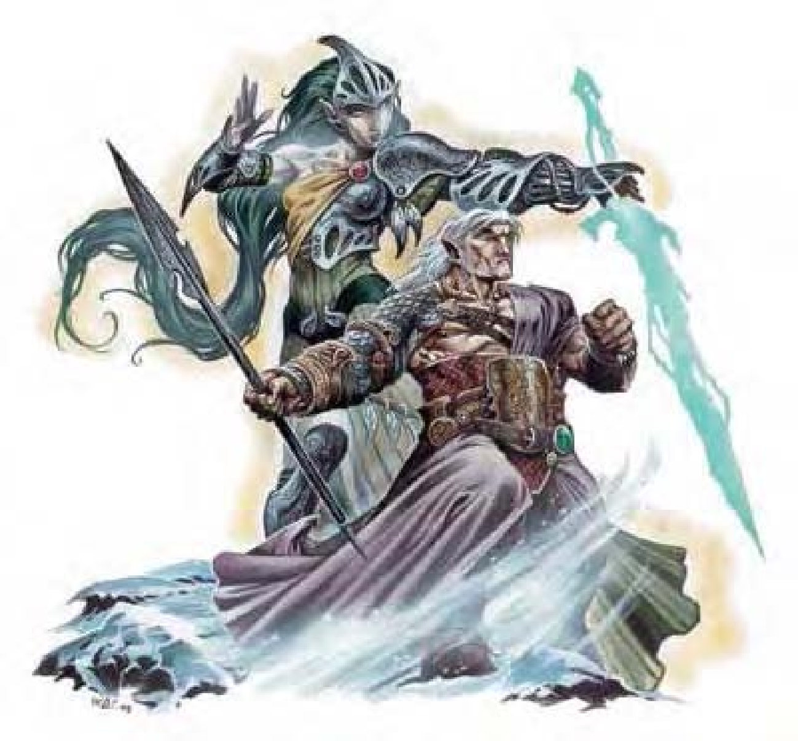

| 资料栏位 | 迦勒神使 (Ghaele) 中型异界生物 (混乱、爱剌、外界、善良) |
| 生命骰 | 10d8+20 (65HP) |
| 先攻 | +5 |
| 速度 | 50英尺 (10格)、飞行150英尺 (灵活) |
| 防御等级 | 25 (+1敏捷、+14天生)、接触14、措手不及24；或14 (+1敏捷、+3偏斜)、接触14、措手不及13 |
| 基本攻击/擒抱 | +10 / +17 |
| 攻击 | “+4神圣巨剑”+21近战 (2d6+14 / 19-20)；或光射线+11远程接触 (2d12) |
| 全力攻击 | “+4神圣巨剑”+21 / +16近战 (2d6+14 / 19-20)；或2光射线+11远程接触 (2d12) |
| 占据/触及 | 5英尺 / 5英尺 |
| 特殊攻击 | 类法术能力、法术、凝视 |
| 特殊能力 | 化形、伤害减免10/邪恶及寒铁、黑暗视觉60英尺、对电击和石化免疫、昏暗视觉、防护灵光、寒冷抗力10、火焰抗力10、法术抗力28、巧言 |
| 豁免 | 强韧+9、反射+8、意志+10 |
| 属性 | 力量25、敏捷12、体质15、智力16、感知17、魅力16 |
| 技能 | 专注+15、交涉+5、脱逃+14、驯养动物+16、躲藏+14、知识 (任二) +16、聆听+16、潜行+14、骑术+16、察言观色+16、侦察+16、绳技+1 (捆缚+3) |
| 专长 | 寓守于攻、精通卸除武器、精通先攻、精通阻绊 |
| 环境 | 奥林匹斯仙界 |
| 组织 | 单独、成双或中队 (3-5) |
| 挑战级数 | 13 |
| 宝藏 | 无钱币、双倍宝物、标准物品 |
| 阵营 | 总是混乱善良 |
| 进化 | 11-15HD (中型)；16-30HD (大型) |
| 等级修正值 | ― |
这种生物外型近似精灵，有股贵族气息，眼睛呈珍珠白，带着淡淡的光泽，全身似乎被光芒所包围。
迦勒神使是天界的骑士，每当世上发生邪恶或暴政时，他们就会出现与其对抗。和其他爱剌天族不同，迦勒神使偏好躲在幕后策动反抗势力，对那些具有善良心灵的生物给予指导，让他们有勇气挣脱迫害。
迦勒神使可以化身为一团色彩变换无方的光球，直径5英尺。
迦勒神使身高约6英尺，重约170磅。
迦勒神使通晓天界语、炼狱语、龙语。迦勒神使还拥有巧言能力，几乎可和任何生物沟通。
战斗一旦进入战斗，迦勒神使就不再诉诸偷鸡摸狗的手段，会光明正大迎向敌人攻击。他们通常会以人形形态作战，高举手中“+4神圣巨剑”。若需要快速机动力，则会化为光球，用光射线痛击敌人。
在计算伤害减免时，迦勒神使的天生武器和持用武器都视为混乱以及善良阵营。
类法术能力：随意施展――“援助术”、“魅惑怪物” (DC=17)、“七彩喷射” (DC=14)、“通晓语言”、“不灭明焰”、“治疗轻伤” (DC=14)、“舞光术”、“侦测邪恶”、“侦测思想” (DC=15)、“魔法易容”、“解除魔法”、“怪物定身术” (DC=18)、“高等隐形术” (只对自身有效)、“高等幻影” (DC=16)、“识破隐形”、“高等传送术” (自己再加50磅重物品)；每天1次――“连环闪电” (DC=19)、“虹光喷射” (DC=20)、“力墙术”。施法者等级12，豁免检定DC的调整值与魅力调整值相同。
法术：人形形态的迦勒神使施术时视同14级牧师。迦勒神使可由下列领域择二：风、动物、混乱、善良或植物 (再加上信奉的神�o所赋予的领域)。豁免检定DC的调整值与感知调整值相同。
一般已准备牧师法术 (6/7/7/6/5/4/4/3；豁免检定DC=13+法术等级)：
零级――“治疗小伤”、“侦测魔法”、“神导术”、“光亮术”、“提升抗力”、“恩赐”；
一级――“祝福术”、“安抚动物”*、“命令术”、“神眷”、“隐雾术”、“圣域术”、“虔诚护盾”；
二级――“援助术”、“同化武器”、“坚韧术”、“动物定身术”*、“次级复原术”、“移除麻痹”、“诚实之域”；
三级――“昼明术”、“气化形体”*、“祈祷术”、“移除诅咒”、“灼热光辉”、“水中呼吸法”；
四级――“防死结界”、“驱逐术”、“神能”、“复原术”、“四级召唤盟友术” (动物)*；
五级――“操控风相”*、“焰击术”、“死者复活”、“真实目光”；
六级――“放逐术”、“剑刃障壁”、“连环闪电”*、“医疗术”；
七级――“动物化身”*、“圣言”、“七级召唤怪物术”。
*领域法术。领域：风和动物。
凝视 (超自然)：人形形态的迦勒神使可以使用凝视攻击，生命骰5以下的邪恶生物会直接死亡，范围60英尺，通过意志检定 (DC=18) 则无效。即使通过检定，目标生物仍会受到如同“恐惧术”的效果影响，持续时间2d10轮。非邪恶阵营生物或是生命骰超过5的邪恶生物也必须进行意志检定，失败的话同样会受到“恐惧术”效果影响，豁免检定DC的调整值与魅力调整值相同。
光射线 (特异)：光球形态的迦勒神使可以发出光射线，范围300英尺，此攻击可以克服任何形态的伤害减免。
化形 (超自然)：花费一个标准动作的时间，迦勒神使可以在人形和光球形态之间自由变换。保持人形时，不能飞行也不能使用“光射线”能力，可以使用凝视攻击、类法术能力、物理攻击和施法。化为光球时则可以飞行，也能使用“光射线”和类法术能力，但不能施法或使用凝视攻击。光球属于虚体生物，处于此形态的迦勒神使没有力量值。
除非主动变形，迦勒神使可以永久保持在任何一种形态。化形能力不会被解除，死亡时也不会变回某种特定形态。然而，若观察者施展“真实目光”法术，则可以看到迦勒神使的两种形态同时存在。
防护灵光 (超自然)：面对邪恶生物的攻击或效果时，离迦勒神使20英尺内的生物AC获得+4偏斜加值，豁免检定获得+4抗力加值。除此之外，防护灵光也有和法术“反邪恶法阵”以及“次级法术无效结界”相同的效果，范围为半径20英尺，施法者等级与迦勒神使的生命骰同。(迦勒神使字段中的数据并未包含上述防御效果。)